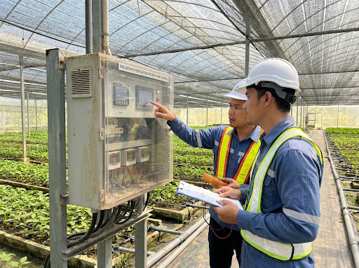

01
Worker Shortages
Many farm tasks need regular checking and manual work. This becomes harder when farms cannot find enough workers.
StarGrid is researching how practical automation can help Malaysian farms manage worker shortages, equipment problems, and the use of water and fertiliser. We are speaking with farmers and agricultural organisations before deciding what to build.
We welcome conversations with commercial growers, farm operators, cooperatives, and agricultural agencies.

Real Farm Challenges
Commercial farms need more than technology that looks good in a demonstration. New systems must consider real work, current equipment, power limits, farm conditions, and the people responsible for daily operations.
Many farm tasks need regular checking and manual work. This becomes harder when farms cannot find enough workers.
Power trips, pump faults, and equipment failures can stop important farm work.
It can be difficult to apply the right amount of water and fertiliser at the right time.
Current Research
StarGrid is carrying out research with Malaysian farmers, farm managers, agricultural officers, cooperatives, researchers, and industry experts. We want to understand daily work, repeated problems, equipment limits, and the decisions people make to keep farms running.
Your experience can help our engineers understand which problems are worth solving.
Research Process
Share your location, farming activity, role, and the main problems you face.
Our team will arrange a short discussion to understand your experience and current work.
If you agree, we may visit your farm to understand the equipment and daily work.
What we learn will guide our engineering work and future product decisions.
Taking part in our research does not mean you need to buy, install, or test anything.
Collaborator Discovery
We are looking for farmers and people working in agriculture who are willing to share their experience. What you tell us can help us understand where automation may be useful and practical.
Suitable participants include: